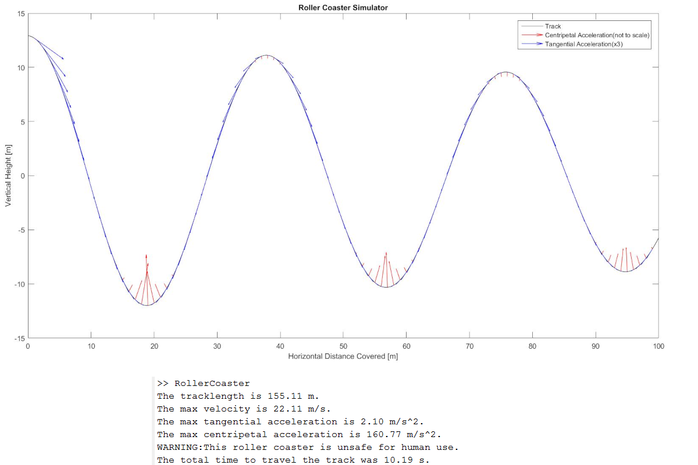

About Me
I am a motivated engineering graduate with professional leadership experience. I have excellent analytical and technical abilities combined with personable qualities formed through exchange programs and captaining sports teams.
I have a diverse background of project experience that includes making video games, building chemical microsensors out of 2 lasers and a piece of glass, and being directly involved in the refurbishment of the world’s largest nuclear power plant.
Education
-
Bachelor of Applied Science, Engineering Physics, Mechanical Option
Queen’s University, Kingston, ON
-
Select Courses in Software Engineering Technology, Game Programming
Centennial College, Scarborough, ON
Projects
- Software
- Engineering
- Physics
-
2D Platformer in a 3D World - "Scarbro"
Academic project created using Unity, working collaboratively in a group of 4
Player navigates a cube shaped world through doors that transport players to different cube faces. Players must avoid spikes and turrets and can change the direction of gravity. Saving all the trapped people unlocks a final exit door
Final project grade of 100%
{kind=link}
-
2D Auto-Scrolling Platformer - “Duck Dream”
Academic and creative project made using Unity
Visually appealing and addictive gameplay where the player must avoid obstacles that slow them down so not to be caught by a dark cloud that chases them
Complete gameplay that includes smooth camera movement, camera shake, particle effects, music & sounds
Try it Here!
{kind=link}
-
Java Video Game Player Database System
Java database connectivity project that used a MySQL database for storing user video game information such as personal information, video games played and high scores
Developed application GUI using JavaFX and SceneBuilder
Users can enter new info or update previous info with database results displayed in a table-style report
{kind=link}
-
MATLAB Computational Physics Roller Coaster Track Segment Simulator
MATLAB project that builds randomly generated roller coaster track segments using mathematical equations
Uses calculus and the conservation of energy to calculate the total track length, max velocity, max tangential acceleration, and max centripetal acceleration to determine if the track segment is safe for human use
Plots the track segment with acceleration vectors to create a visual of where the track is most uncomfortable for riders
- 
{kind=link}
-
Nuclear Power Plant Freight Elevator Refurbishment
Project Engineering Lead for modernization project of an important plant freight elevator from the 1970s
Project finished on-time and on-budget despite numerous discovery work issues related to plant age
Participated in initiative to implement additional safety features to elevator doors to improve workplace safety
-
Nuclear Power Plant 37-foot Ball Screw Replacements
Project Engineering Lead for logistically challenging replacement of 37-foot ball screws that raise and lower the machine which carries both new and spent uranium fuel from the reactors
Coordinated time window and operated 360° laser-scanning camera to obtain precise measurements in highly radioactive and equipment-sensitive areas that are inaccessible on a routine basis
Used Visio and enterprise asset management software to plan complex logistics of traversing ball screws into the containment structure where existing airlocks are too small for ball screws to fit
-
Photothermal Optofluidic Chemical Microsensor
Fabricated waveguides using a silver-sodium ion exchange in BoroFloat33 glass for the development of a photothermal optofluidic chemical microsensor
Utilised common micro-technology fabrication techniques such as masking layer depositions, photoresist applications, UV photolithography, masking layer etching as well as ion exchange
Inspected and tested final product to prove functionality by detecting Bromothymol blue in water
{kind=link}
-
Wizard Chess – Mechanical and Electronics Team
Worked in a group of 7 to build a voice-controlled, hands-free chess board inspired by Harry Potter
Troubleshot and fixed faulty bi-axial rail system that was sticking by implementing small vibrating motor that reduced friction along rails
Developed chess board surface that perfected the functionality of the hidden electromagnet so not to inadvertently drag pieces too far
Contact Me
Please reach out to me via email if you want to chat or have any questions.
I look forward to hearing from you.